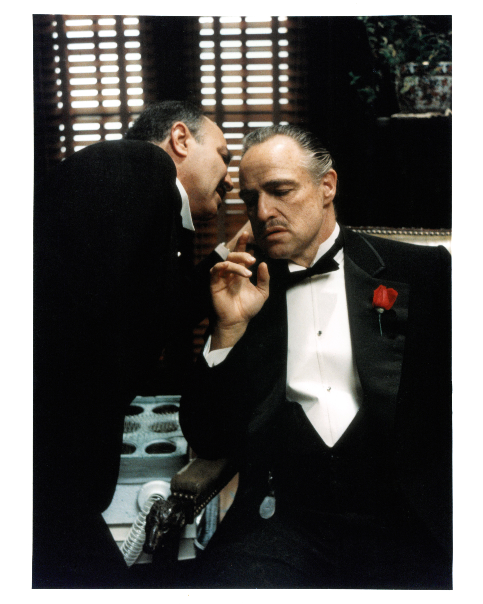

Gelmiş geçmiş en ünlü mafya serisi/üçlemesi ‘Baba’, orijinal ismiyle ‘The Godfather’ı bilmeyen çok azdır. Francis Ford Coppola yönetmenliğinde çekilen, hepsi birer sinema şaheseri olan 3 film de izlemeden ölmemeniz gereken filmlerden bizce. Sicilyalı mafya ailesi Corleoneler’i merkezine alan filmde aile reisi olan “Baba”yı efsanevi aktör Marlon Brando canlandırırken, Don Vito Corleone’nin oğlu, veliaht Michael Corleone’yiyse Al Pacino canlandırıyor. Diane Keaton ve Robert De Niro’nun da kadrosunda yer aldığı film üçlemesi ‘The Godfather’, “En İyi Film” de dahil kazandığı 3 Oscar Ödülü’yle, Oscar Ödülleri’ne doymayan yapımlardan. Etkileyici tema müziği, çekildiği yıllar olan 70’lere göre oldukça ileride olan yapım tekniği, inanılmaz oyunculukları, Don Vito Corleone’nin "Ona reddedemeyeceği bir teklif yapacağım." repliği gibi akılda kalan replikleriyle ‘Baba’ üçlemesini izlemeyen bin pişman!
 Film Listesi